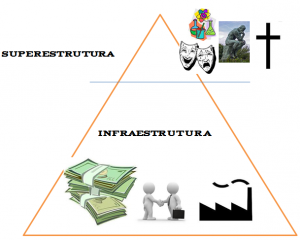
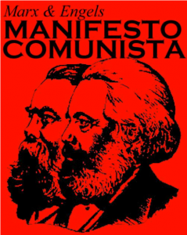

Entenda como Karl Marx contribuiu para a compreensão do sistema capitalista e como seu pensamento influenciou os movimentos sociais do século XX.
Karl Marx buscou compreender a gênese do capitalismo industrial e a condição social dos trabalhadores nos países europeus no final do século XIX. Junto com Friedrich Engels, formulou a principal crítica científica ao sistema capitalista, de grande importância para os campos da sociologia, história, filosofia, economia e ciência política.
O pensamento de Karl Marx influenciou grande parte dos movimentos políticos do século XX. Assim, o marxismo se tornou ao mesmo tempo uma importante teoria da sociedade moderna e uma influente doutrina para movimentos sociais de contestação ao capitalismo e de promoção do comunismo ou do socialismo.
As principais obras de Marx são O Capital e o Manifesto Comunista, este escrito em parceria com Engels. Além dos livros mais conhecidos, Marx também escreveu outras obras de destaque para a sociologia e a ciência política, tais como O 18 Brumário de Luís Bonaparte e Contribuição à crítica da economia política.
Veja agora com a professora Anna Amorim, do canal do Curso Enem Gratuito, uma introdução completa ao pensamento de Karl Marx.
Confira agora em detalhes o Materialismo Histórico.
O ponto de partida do pensamento de Marx é o desenvolvimento histórico dos meios materiais de produção e reprodução das sociedades. Por isso, o seu método é conhecido como materialismo histórico, em oposição ao idealismo da filosofia alemã (que concebia a realidade como resultado do pensamento dos indivíduos).
Do ponto de vista do materialismo histórico marxista, o motor da história é a dialética, ou seja, o conflito entre as forças produtivas e as relações de produção. Por isso, podemos afirmar que para Marx a história das sociedades é a história da luta de classes.
Karl Marx divide a história em ciclos de modos de produção:
As sociedades se organizam em relações de produção que correspondem a uma determinada etapa de desenvolvimento das suas forças produtivas materiais. O conjunto dessas relações de produção forma a estrutura econômica de determinada sociedade.
A estrutura econômica é a base real sobre a qual se ergue a superestrutura correspondente a expressões da consciência social. Para Marx, o modo de produção da vida material é que condiciona o processo da vida social, política, intelectual e espiritual.
Ou seja, a estrutura econômica determina a superestrutura, e não o contrário. Veja na imagem acima. A infraestrutura ou estrutura econômica (os modos de produção) determina a superestrutura social (religião, direito, cultura, artes, ciência, etc.).
Marx defende que as revoluções ocorrem por causa das contradições da estrutura material, isto é, do conflito existente entre as classes.
No “Manifesto do Partido Comunista”, Marx e Engels chegam à conclusão de que os conflitos entre burgueses e proletários levarão à destruição do capitalismo e, consequentemente, conduzirão ao comunismo (sociedade sem classes).
Marx e Engels, no “Manifesto Comunista”, incitam os trabalhadores à tomada de consciência de classe: “Proletários de todo o mundo, uni-vos!”.
A Sociologia do Enem cobra três autores em detaque: Karl Marx; Émile Durkheim; e Max Weber. Veja no resumo qual e o enfoque de cada um deles para explicar O Trabalho humano:
Em “O Capital”, Marx e Engels se propõem a fazer um estudo detalhado e científico do capitalismo. Para isso, eles começam sua análise pela “célula básica” da sociedade capitalista: a mercadoria. Vamos seguir o raciocínio de Marx e Engels?
Cada mercadoria tem um valor, que é medido pela quantidade de trabalho humano. Ou seja, podemos determinar o valor de uma mercadoria pelo trabalho que deu para fazê-la: foi necessário 1 hora ou 12 horas de trabalho para produzir uma mercadoria, por exemplo.
Os autores diferenciam dois tipos de valores: valor de uso e valor de troca.
Na lógica de Marx, os burgueses são aqueles que detêm os meios de produção. Já os proletários são aqueles que nada mais têm além da sua força de trabalho. A força de trabalho também é uma mercadoria, a qual os proletários vendem para o burguês em troca de dinheiro (salário).
Porém, o valor de sua força de trabalho durante o tempo que está produzindo é muito maior do que o salário recebido. Por exemplo, todos os dias o trabalhador produz uma quantidade X de valor, mas recebe apenas um terço de X. Logo, os dois terços não-pagos ao trabalhador se transformam em riqueza para o burguês.
Esse trabalho excedente é o que Marx chama de mais-valia e constitui na expressão primordial da exploração da força de trabalho pelo capital.
Marx se pergunta: por que homens e mulheres não percebem a condição de exploração em que vivem? O autor chama de alienação quando o operário desconhece o funcionamento do modo de produção e não percebe que está sendo “roubada” parte do seu trabalho.
Nesse contexto, a ideologia seria o meio usado pelos dominantes para exercer tal dominação, fazendo com que esta não seja percebida como tal pelos dominados. Assim, Marx considera que a ideologia dominante é a da classe dominante.